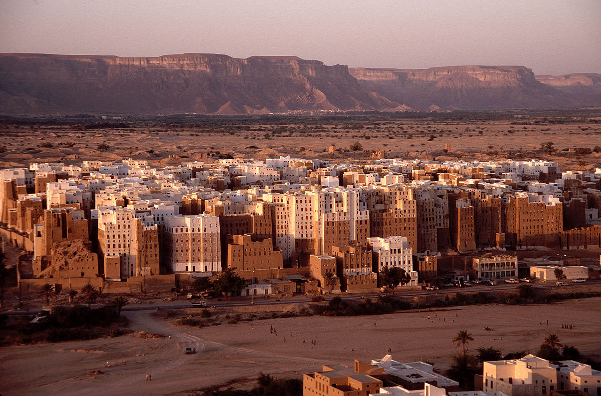
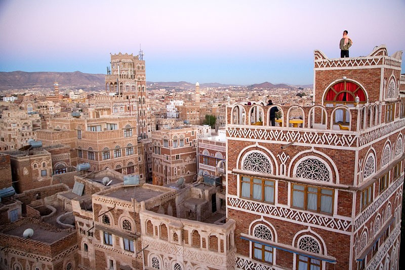
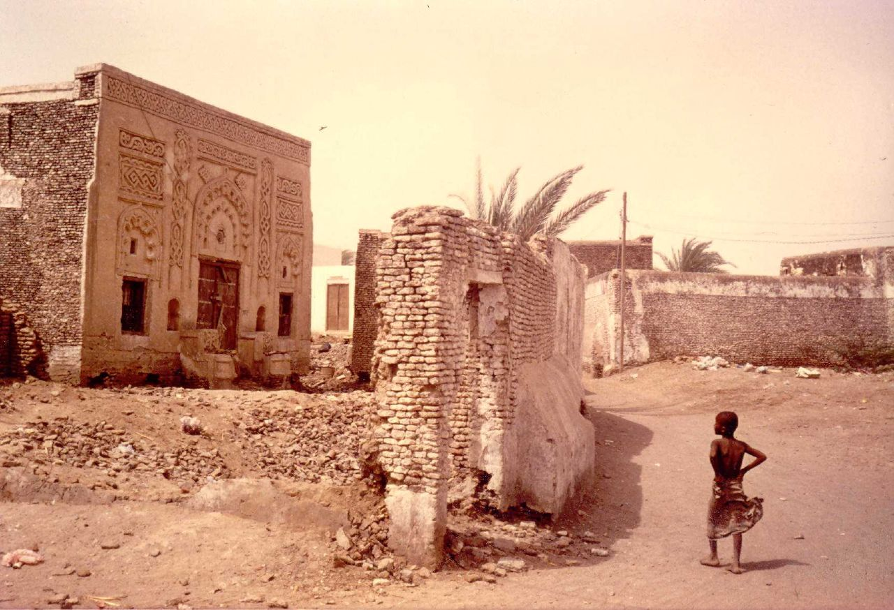
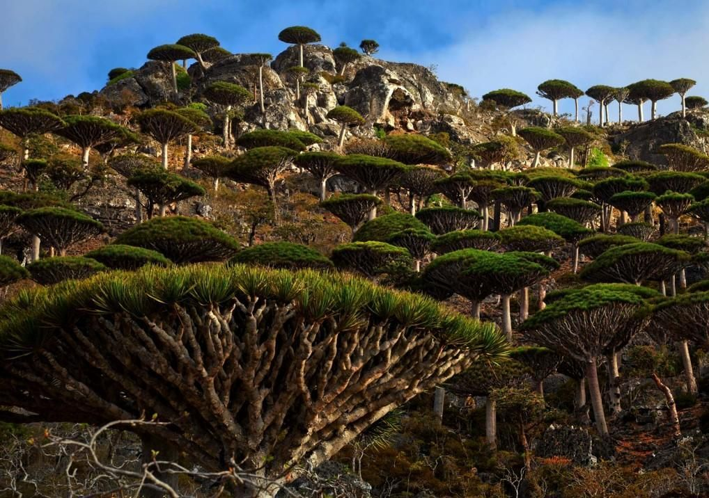

Йемен
Йемен – арабское государство, расположенное на юге Аравийского полуострова и омываемое водами Красного и Аравийского морей. Название страны «аль-Яман» может быть переведено с арабского языка как «правая сторона» или «счастье», «благоденствие». Йемен занимает большую часть территории, которую древние римляне называли «Арабиа Феликс» («Счастливая Аравия»).
Республика Йемен, к сожалению, в настоящее время не является спокойным регионом. Страна фактически поделена на три части, причем столица государства находится под контролем повстанцев. Официальные органы прекратили выдачу виз в Йемен, однако безопасные восточные земли страны, возможно, открыты для посещения.
Тем не менее, Йемен известен своими природными и культурными достопримечательностями, среди которых четыре внесены в список всемирного наследия ЮНЕСКО.
В пустыне Йемена, в Вади Хадрамаут, находится древний, окруженный глиняной стеной город Шибам, внесённый в список объектов всемирного наследия ЮНЕСКО. Его называют Манхэттеном пустыни из-за его высоких глинобитных домов. Город, построенный в XVI веке, является одним из старейших образцов городского планирования, основанного на принципе вертикального строительства.

Сана, столица Йемена, считается одним из старейших городов в мире. Сана стала главным исламским центром страны в VII веке, в городе находится 103 мечети, 14 хаммамов (традиционные бани) и более 6 тыс. домов, датируемых до XI века. В связи со всем этим старая часть города Саны внесена в список объектов всемирного наследия ЮНЕСКО.

Недалеко от побережья Красного моря находится исторический город Забид, также внесённый в список всемирного наследия. Забид был столицей Йемена с XIII по XV век, а ныне является важным археологическим и историческим памятником. Он играл важную роль в течение многих веков, его университет был одним из основных образовательных центров всего арабского и исламского мира.

Последним из всех «чудес» Йемена в список всемирного наследия попал архипелаг Сокотра. Упомянутый Марко Поло в XIII веке, этот отдалённый и изолированный архипелаг состоит из четырёх островов и двух скалистых островков в Аденском заливе. Архипелаг имеет крайне разнообразную флору и фауну. Остров является домом для 192 видов птиц, 253 видов кораллов, 730 видов прибрежных рыб и 300 видов крабов и омаров, а также родиной знаменитого сокотрова драконова дерева (Dracaena cinnabari).

Мы очень надеемся на то, что все удивительные места данной страны вновь будут доступны туристам и путешественникам.